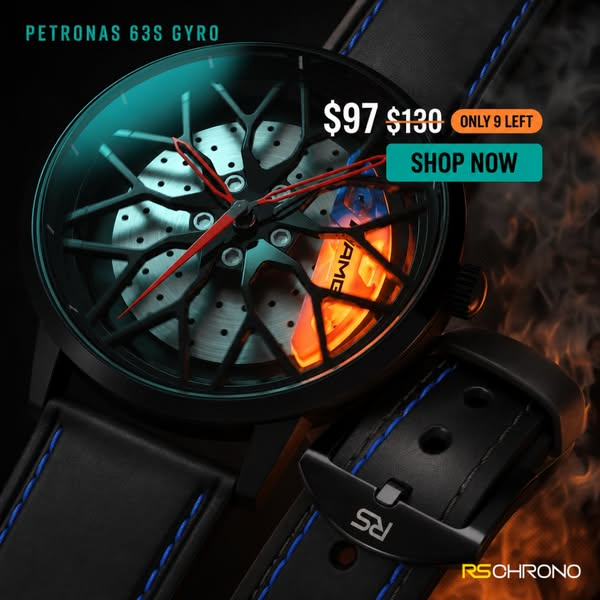
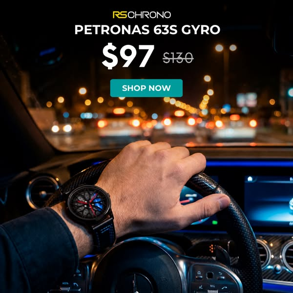
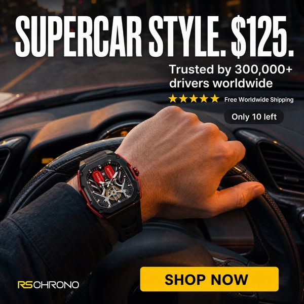

12 criativos baixados localmente (arquivo próprio, não link da CDN da Meta — que expira em horas) dos 4 concorrentes com dados de Ad Library confirmados. Rankeados por dias no ar, no máximo 3 por marca. Longevidade é proxy de tração, nunca prova de ROAS.
Três cards por linha no desktop, um no celular. Cada card mostra a marca, formato, longevidade e o link direto pra Ad Library. Cópia e ângulo aparecem quando foram capturados como texto (RS Chrono e HMN Watch); DriftElement e Carrora entram como amostra visual sem decodificação de texto — ver lacuna na seção 03.

Petronas 63S Gyro. "$97 (era $130) · Only 9 left · Shop Now". Ancoragem de preço + escassez numérica, still de produto com labareda ao fundo.
Ver na Biblioteca ↗
Petronas 63S Gyro. Mesmo produto e preço, cena de estilo de vida: mão no volante, painel do carro desfocado, luzes da cidade à noite atrás do para-brisa.
Ver na Biblioteca ↗
"Supercar Style. $125." Headline em letra grande, prova social ("Trusted by 300,000+ drivers worldwide" + 5 estrelas), frete grátis, "Only 10 left", pulso no volante.
Ver na Biblioteca ↗HMN BRZ Performance Watch. "Inspired by Subaru, built for enthusiasts. Feel the drive on your wrist! Limited stock – order now!" — o anúncio ativo mais antigo confirmado nesta pesquisa (desde 23/07/2025).
Ver na Biblioteca ↗HMN BRZ Performance Watch. Mesma copy, variação de mídia/formato do mesmo anúncio — duas versões rodando em paralelo há mais de um ano.
Ver na Biblioteca ↗HMN BRZ Performance Gold Wheel Watch. "New color for Subaru fans... in gold wheel." Variação de cor do mesmo produto vendida como novidade — reaproveita o mesmo ângulo "fã de [marca de carro]" pra estender a vida do criativo.
Ver na Biblioteca ↗Vídeo real baixado da Ad Library (busca por domínio driftelement.com, confirmado). Texto do anúncio não capturado nesta rodada — ver lacuna na seção 03.
Ver na Biblioteca ↗Vídeo real, mesma origem confirmada. Texto do anúncio NÃO OBTIDO nesta rodada.
Ver na Biblioteca ↗Vídeo real, mesma origem confirmada. Texto do anúncio NÃO OBTIDO nesta rodada.
Ver na Biblioteca ↗Vídeo real baixado da Ad Library (busca por domínio carrorawatches.com, confirmado). Texto do anúncio NÃO OBTIDO nesta rodada.
Ver na Biblioteca ↗Vídeo real, mesma origem confirmada. Texto do anúncio NÃO OBTIDO nesta rodada.
Ver na Biblioteca ↗Vídeo real, mesma origem confirmada. Texto do anúncio NÃO OBTIDO nesta rodada.
Ver na Biblioteca ↗Decodificação completa dos 4 criativos mais fortes da amostra (2 marcas, RS Chrono e HMN Watch — as únicas com cópia de anúncio confirmada em texto nesta rodada).
| Criativo | Big idea | Gancho | Ângulo | Estrutura | Objeção que ataca | Texto na tela |
|---|---|---|---|---|---|---|
| RS Chrono · Supercar Style $125 | O relógio é acessível, o status é de supercarro | Headline gigante "SUPERCAR STYLE. $125." no topo, sem enrolação | Ancoragem de preço + prova social numérica (300.000+ clientes) | Headline → prova social → escassez → CTA amarelo | "Isso não vai ser genérico/barato" — resolvida com "trusted by 300k+" e 5 estrelas | SUPERCAR STYLE. $125. / Trusted by 300,000+ drivers worldwide / ★★★★★ / Free Worldwide Shipping / Only 10 left / SHOP NOW |
| RS Chrono · Petronas 63S Gyro (still) | Você já reconhece essa marca de corrida, agora pode usá-la no pulso | Nome do time (Petronas) + preço riscado ("$130 → $97") | Ancoragem de desconto + escassez ("Only 9 left") | Nome do produto → preço com desconto → escassez → CTA | "Vou perder a promoção" — escassez numérica específica, não genérica | PETRONAS 63S GYRO / $97 $130 / Only 9 left / SHOP NOW |
| RS Chrono · Petronas 63S Gyro (lifestyle) | Isso é pra quem dirige de verdade, não só pra quem coleciona | Cena de direção noturna real, mão no volante com o relógio em destaque | Identidade ("eu sou motorista/entusiasta") em vez de especificação técnica | Marca no topo → nome do produto → preço → CTA sobre a cena | "É só decoração, não combina com uso real" — mostrado sendo usado dirigindo | RSCHRONO / PETRONAS 63S GYRO / $97 $130 / SHOP NOW |
| HMN Watch · BRZ Performance | Existe uma versão desse relógio pra CADA marca/modelo que você ama | Emoji de carro + "Inspired by Subaru, built for enthusiasts" | Afinidade de marca específica (Subaru) puxando fã daquele modelo exato | Emoji/gancho → promessa de identidade → escassez → CTA | "Não é pra mim, é genérico" — resolvida nomeando a marca exata do carro do espectador | (vídeo, sem overlay de texto capturado — copy vem da legenda do anúncio) |
Amostra qualitativa dos 12 baixados, por formato visual predominante.
| Dado | Motivo | Método tentado |
|---|---|---|
| Cópia de texto dos 6 vídeos de DriftElement e Carrora | A extração de texto por card (minerar-midia.mjs) capturou o cabeçalho de metadado do anúncio, não a legenda real, num bug identificado durante a coleta. A mídia (vídeo) em si foi corretamente extraída e baixada via página de permalink de cada anúncio. | DOM scraping por card com heurística de "maior ancestral com mídia" — funcionou pra mídia, falhou pro texto adjacente. Corrigível numa próxima rodada com seletor mais específico. |
| Frame de capa e transcrição de áudio dos vídeos | ffmpeg não está instalado nesta máquina. | which ffmpeg retornou vazio. Os vídeos brutos tocam direto na página (elemento <video>), só não têm capa estática nem transcrição. |
| Ranking de escala de Magnus Watch, DriveClox e GoRacer nos criativos | Sem contagem de anúncio confiável (ver dados/auditoria-anuncios.json), não dá pra afirmar que esses 3 estão entre os "mais escalados do mercado" com o mesmo rigor dos outros 4. | Mesma tentativa de busca por domínio/nome documentada na página de Demanda. |